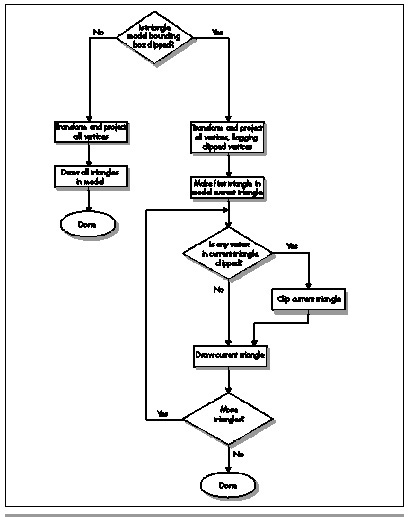

| Previous | Table of Contents | Next |
Triangle models are stored quite differently from the world itself. Each model consists of front and back skins stretched around a triangle mesh, and contains a full set of vertex coordinates for each animation frame, so animation is performed by simply using the correct set of coordinates for the desired frame. No interpolation, morphing, or other runtime vertex calculations are performed.
Early on, we decided to allow lower drawing quality for triangle models than for the world, in the interests of speed. For example, the triangles in the models are small, and usually distant—and generally part of a quickly moving monster that’s trying its best to do you in—so the quality benefits of perspective texture mapping would add little value. Consequently, we chose to draw the triangles with affine texture mapping, avoiding the work required for perspective. Mind you, the models are perspective-correct at the vertices; it’s just the pixels between the vertices that suffer slight warping.

Figure 69.1 Quake’s triangle-model drawing pipeline.
Another sacrifice at the altar of performance was subpixel precision. Before each triangle is drawn, we snap its vertices to the nearest integer screen coordinates, rather than doing the extra calculations to handle fractional vertex coordinates. This causes some jumping of triangle edges, but again, is not a problem in normal gameplay, especially for the animation of figures in continuous motion.
One interesting benefit of integer coordinates is that they let us do backface culling and rejection of degenerate triangles in one operation, because the cross-product z component used for backface culling returns zero for degenerate triangles. Conveniently, that cross-product component is also the denominator for the lighting and texture gradient calculations used in drawing each triangle, so as soon as we check the cross-product z value and determine that the triangle is drawable, we immediately start the FDIV to calculate the reciprocal. By the time we get around to calculating the gradients, the FDIV has completed execution, effectively taking only the one cycle required to issue it, because the integer execution pipes can process independently while FDIV executes.
Finally, we decided to Gouraud-shade the triangle models, because this makes them look considerably more 3-D. However, we can’t afford to calculate where all the relevant light sources for each model are in each frame, or even which is the primary light source. Instead, we select each model’s lighting level based on how brightly the floor point it was standing on is lit, and use that lighting level for both ambient lighting (so all parts of the model have some illumination) and Gouraud shading—but the lighting vector for Gouraud shading is a fixed vector, so the model is always lit from the same direction. Somewhat surprisingly, in practice this looks considerably better than pure ambient lighting.
As we implemented triangle models, we tried several ideas that didn’t work out. One that’s notable because it seems so appealing is caching a model’s image from one frame and reusing it in the next frame as a sprite. Our thinking was that clipping, transforming, projecting, and drawing a several-hundred-triangle model was going to be a lot more expensive than drawing a sprite, too expensive to allow very many models to be visible at once. We wanted to be able to display at least a dozen simultaneous models, so the idea was that for all but the closest models, we’d draw into a sprite, then reuse that sprite at the model’s new locations for the next two or three frames, amortizing the 3-D drawing cost over several frames and boosting overall model-drawing performance. The rendering wouldn’t be exactly right when the sprite was reused, because the view of the model would change from frame to frame as the viewer and model moved, but it didn’t seem likely that that slight inaccuracy would be noticeable for any but the nearest and largest models.
As it turns out, though, we were wrong: The repeated frames were sometimes painfully visible, looking like jerky cardboard cutouts. In fact they looked a lot like the sprites used in DOOM—precisely the effect we were trying to avoid. This was especially true if we reused them more than once—and if we reused them only once, then we had to do one full 3-D rendering plus two sprite renderings every two frames, which wasn’t much faster than simply doing two 3-D renderings.
The sprite architecture also introduced considerable code complexity, increased memory footprint because of the need to cache the sprites, and made it difficult to get hidden surfaces exactly right because sprites are unavoidably 2-D. The performance of drawing the sprites dropped sharply as models got closer, and that’s also where the sprites looked worse when they were reused, limiting sprites to use at a considerable distance. All these problems could have been worked out reasonably well if necessary, but the sprite architecture just had the feeling of being fundamentally not the right approach, so we tried thinking along different lines.
John Carmack had the notion that it was just way too much effort per pixel to do all the work of scanning out the tiny triangles in distant models. After all, distant models are just indistinct blobs of pixels, suffering heavily from effects such as texture aliasing and pixel quantization, he reasoned, so it should work just as well if we could come up with another way of drawing blobs of approximately equal quality. The trick was to come up with such an alternative approach. We tossed around half-formed ideas like flood-filling the model’s image within its silhouette, or encoding the model as a set of deltas, picking a visible seed point, and working around the visible side of the model according to the deltas. The first approach that seemed practical enough to try was drawing the pixel at each vertex replicated to form a 2x2 box, with all the vertices together forming the approximate shape of the model. Sometimes this worked quite well, but there were gaps where the triangles were large, and the quality was very erratic. However, it did point the way to something that in the end did the trick.
One morning I came in to the office to find that overnight (and well into the morning), John had designed and implemented a technique I’ll call subdivision rasterization. This technique scans out approximately the right pixels for each triangle, with almost no overhead, as follows. First, all vertices in the model are drawn. Ideally, only the vertices on the visible side of the model would be drawn, but determining which vertices those are would take time, and the occasional error from a visible back vertex is lost in the noise.
| Previous | Table of Contents | Next |